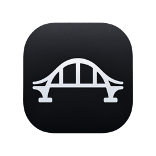
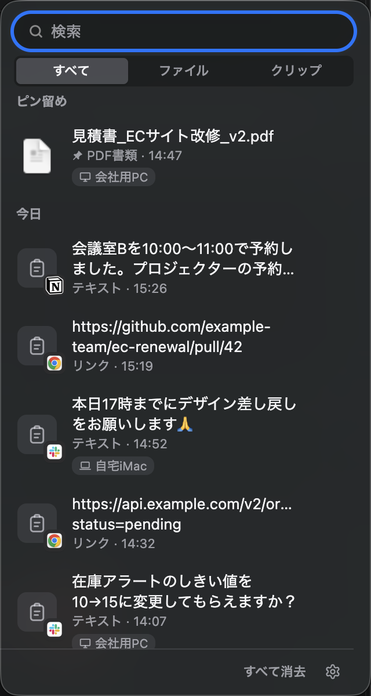
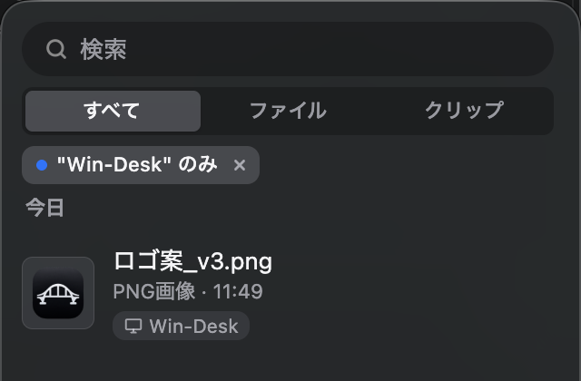
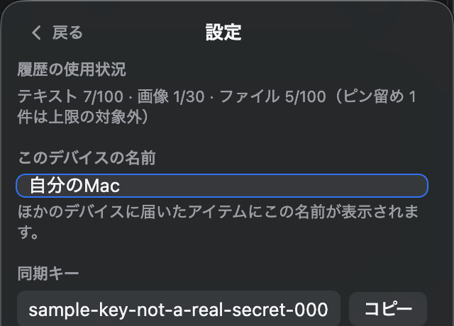

画面の右端に常駐する、ファイルとクリップボードのための小さな橋。マウスを寄せれば現れ、離せば格納される。 同期はクラウドを介さず、同じ Wi-Fi / LAN にいる Mac と Windows が直接つながる。 見た目と操作感は、それぞれの OS の流儀にできるだけ合わせて作った。

what it does
Finder / エクスプローラーからドロップして一時的に保持。行をクリックすれば public.file-url（macOS）/ CF_HDROP（Windows）として書き戻し、他のアプリへ「本物のファイル」として ⌘V / Ctrl+V できる。
テキスト・画像・ファイルコピーを 500ms ポーリングで常時監視。パスワードマネージャーが宣言する ConcealedType / Transient 形式は記録も同期もしない。
各デバイスが node:http だけの軽量サーバーを持つ P2P 構成。UDP マルチキャストで自己紹介し合い、見つからなければ /24 スキャン、共有トークンで認証する。
native by platform
同じ機能でも、macOS と Windows では「らしい」動き方が違う。中身のロジックは共通のまま、見た目と挙動の階層だけ platform 分岐させている。
vibrancy: 'sidebar' を敷き、つまみへ 0.25 秒寄せるとバネで幅が伸びるcubic-bezier(0.2, 0.8, 0.2, 1) で横に滑らせているsetTitle でアイコン横に ↓42%mdls から取得するCF_HDROP や画像の連番変化を監視するtry it
下は index.html / styles.css から検索欄・セグメントコントロール・リスト行の CSS とマークアップをそのまま移植したもの（OS 依存部分だけダミーに差し替え）。ピン留め・出身デバイス・コピー元アプリのバッジも本物と同じ見た目で出る。
検索・切り替え・クリックコピーは全部本物に動きます。右クリックでデバイス絞り込みも試せます（コピー先は自分のクリップボード）
design log
「複数デバイスの履歴が混ざったとき、どう絞り込むか」を作っている途中の実際の変遷。最初から今の形だったわけではない。
「:file」「:clip」とコマンド入力してトークン化する方式で種別を絞り込んでいた。Slack や Linear の検索窓に近い操作感。
Finder / Mail / Spotlight は「打たせる」のではなく「見えるボタンで選ばせる」。file/clip は2〜3択しかなく、コマンド入力は過剰装備と判断。セグメントコントロールに置き換えた。
同期でデバイスが増えると履歴が混ざる。台数分の選択肢を常設ボタンで持つと環境依存で UI が破綻するため、右クリックメニュー「このデバイスのアイテムだけ表示」から入る一時的な絞り込みにした。
絞り込み中のチップを footer に置いていたが、footer は状態表示専用にすべきと考え直し、「今何を見ているか」を示す情報として file/clip セグメントのすぐ下に集約した。
彩度の高いアクセント色の塗り + 白文字にしていたが、同系色同士でコントラストが弱く読みにくいと気づいた。アプリ内の他の選択状態と同じ「色でなく塗りの強さで示す」原則に揃え、ニュートラルな地 + 通常の文字色 + 小さいアクセントドットに変更した。
この過程で「footer の件数表示は、履歴の上限にすぐ頭打ちして意味を持たなくなる」ことにも気づき、キーワード検索中だけヒット数を出す仕様に直した。設定シートには上限までの内訳を新設した。

specs
devDependencies は electron / electron-builder のみで実行時の外部依存はゼロcontextIsolation: true / nodeIntegration: false。preload.js が公開する最小限の API のみ使用timingSafeEqual で比較。不一致は全エンドポイント 401